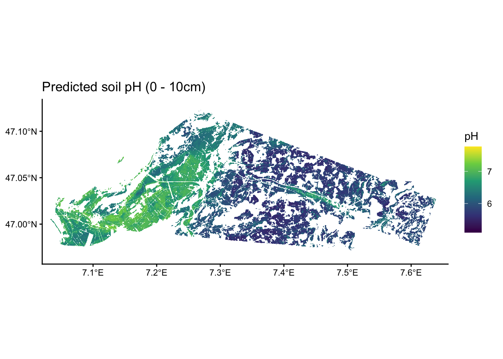

Code
library(dplyr)
library(tidyr)
library(readr)
library(ggplot2)
library(here)
library(knitr)
library(terra)
library(tidyterra)
library(stringr)
library(purrr)
library(ranger)
library(parallel)First, load packages required for this chapter.
library(dplyr)
library(tidyr)
library(readr)
library(ggplot2)
library(here)
library(knitr)
library(terra)
library(tidyterra)
library(stringr)
library(purrr)
library(ranger)
library(parallel)The trained model, calibration and validation data are loaded.
# Load random forest model
rf_bor <- readRDS(here("data/rf_for_pH0-10.rds"))
df_train <- readRDS(here("data/cal_for_ph0-10.rds"))
df_test <- readRDS(here("data/val_for_ph0-10.rds"))Next, we load a mask of the area over which the soil will be mapped. Our target area to predict over is defined in the file area_to_be_mapped.tif. Since we only want to predict on a given study area, the TIF file comes with a labeling of 0 for pixels that are outside the area of interest and 1 for pixels within the area of interest.
# Load area to be predicted
raster_mask <- rast(here("data-raw/geodata/study_area/area_to_be_mapped.tif"))
# Turn target raster into a dataframe, 1 px = 1 cell
df_mask <- as.data.frame(raster_mask, xy = TRUE)
# Filter only for area of interest
df_mask <- df_mask |>
filter(area_to_be_mapped == 1)
# Display df
head(df_mask) |>
kable()| x | y | area_to_be_mapped |
|---|---|---|
| 2587670 | 1219750 | 1 |
| 2587690 | 1219750 | 1 |
| 2587090 | 1219190 | 1 |
| 2587090 | 1219170 | 1 |
| 2587110 | 1219170 | 1 |
| 2587070 | 1219150 | 1 |
Next, we have to load the selected set of covariates as maps. These will be as the basis for spatial upscaling and provide the predictor values across space, fed into the trained model for predicting soil pH across space.
Get a list of all available covariate file names.
files_covariates <- list.files(
path = here("data-raw/geodata/covariates/"),
pattern = ".tif$",
recursive = TRUE,
full.names = TRUE
)Note that the predictor rasters have to have the same resolution, extent, and coordinate reference system. This is the case as shown for two randomly picked examples.
random_files <- sample(files_covariates, 2)
rast(random_files[1])class : SpatRaster
size : 986, 2428, 1 (nrow, ncol, nlyr)
resolution : 20, 20 (x, y)
extent : 2568140, 2616700, 1200740, 1220460 (xmin, xmax, ymin, ymax)
coord. ref. : CH1903+ / LV95
source : Se_PO2m_r500.tif
name : Se_PO2m_r500
min value : 0.3541574
max value : 1.6430260 rast(random_files[2])class : SpatRaster
size : 986, 2428, 1 (nrow, ncol, nlyr)
resolution : 20, 20 (x, y)
extent : 2568140, 2616700, 1200740, 1220460 (xmin, xmax, ymin, ymax)
coord. ref. : CH1903+ / LV95
source : Se_curv2m_std_5c.tif
name : Se_curv2m_std_5c
min value : 0.0000
max value : 915.7392 Load the rasters for the selected predictor variables into a raster object (a “stack” of multiple rasters).
# Filter that list only for the variables used in the RF
preds_selected <- names(rf_bor$forest$covariate.levels)
list_raster <- list.files(
here("data-raw/geodata/covariates/"),
full.names = TRUE
)
files_selected <- list_raster |>
purrr::keep(~ str_detect(.x, str_c(preds_selected, collapse = "|")))
# Load all rasters as a stack
raster_covariates <- rast(files_selected)Convert the raster stack into a dataframe - the preferred format for model prediction.
# Get coordinates for which we want data
df_locations <- df_mask |>
dplyr::select(x, y)
# Extract data from covariate raster stack for all gridcells in the raster
df_predict <- terra::extract(
raster_covariates, # The raster we want to extract from
df_locations, # A matrix of x and y values to extract for
ID = FALSE # To not add a default ID column to the output
)
df_predict <- cbind(df_locations, df_predict) |>
tidyr::drop_na() # Se_TWI2m has a small number of missing dataTo test our model for how well it predicts on data it has not used during model training, we first have to load the {ranger} package to load all functionalities to run a Random Forest with the predict() function. Alongside our model, we feed our validation data into the function and set its parallelization settings to use all but one of our computer’s cores.
# Make predictions for validation sites
prediction <- predict(
rf_bor, # RF model
data = df_test, # Predictor data
num.threads = parallel::detectCores() - 1
)
# Save predictions to validation df
df_test$pred <- prediction$predictionsNow that we have our predictions ready, we can extract standard metrics for a classification problem (see AGDS Chapter 8.2.2).
# Calculate error
err <- df_test$ph.0.10 - df_test$pred
# Calculate bias
bias <- mean(err, na.rm = TRUE) |> round(2)
# Calculate RMSE
rmse <- sqrt(mean(err, na.rm = TRUE)) |> round(2)
# Calculate R2
r2 <- cor(df_test$ph.0.10, df_test$pred, method = "pearson")^2 |> round(2)df_test |>
ggplot(aes(x = pred, y = ph.0.10)) +
geom_point() +
geom_smooth(
method = "lm",
color = "tomato"
) +
theme_classic() +
geom_abline(
intercept = 0,
slope = 1,
linetype = "dotted"
) +
ylim(5, 7.5) +
xlim(5, 7.5) +
labs(
title = "Predicted vs. Observed soil pH 0-10 cm",
subtitle = bquote(paste(
"Bias = ", .(bias),
", RMSE = ", .(rmse),
", R"^2, " = ", .(r2)
)),
x = "Predicted pH",
y = "Observed pH"
)
The plot shows that our model explains about half of the observed variation in soil pH. Yet, we can also see that the model tends to overestimate low pH values. Anyways, let’s move ahead.
The fitted and tested model can now be used for spatially upscaling - creating a map of top soil pH values across our study area. For this, we again make predictions with our Random Forest model but we use our covariates dataframe for the study area, instead of only at the sampling locations as done above.
# Make predictions using the RF model
prediction <- predict(
rf_bor, # RF model
data = df_predict,
num.threads = parallel::detectCores() - 1
)
# Attach predictions to dataframe and round them
df_predict$prediction <- prediction$predictions# Extract dataframe with coordinates and predictions
df_map <- df_predict |>
dplyr::select(x, y, prediction)
# Turn dataframe into a raster
raster_pred <- rast(
df_map, # Table to be transformed
crs = "+init=epsg:2056", # Swiss coordinate system
extent = ext(raster_covariates) # Prescribe same extent as predictor rasters
)# Let's have a look at our predictions!
# To have some more flexibility, we can plot this in the ggplot-style as such:
ggplot() +
geom_spatraster(data = raster_pred) +
scale_fill_viridis_c(
na.value = NA,
option = "viridis",
name = "pH"
) +
theme_classic() +
scale_x_continuous(expand = c(0, 0)) +
scale_y_continuous(expand = c(0, 0)) +
labs(title = "Predicted soil pH (0 - 10cm)")
Interesting, we see that in this study area, there is a tendency of having more acidic soils towards the south west and more basic soils towards the north east.
Let’s write the predicted top soil pH raster into a GeoTIFF file.
# Save raster as a GeoTIFF
writeRaster(
raster_pred,
here("data/ra_predicted_ph0-10.tif"),
datatype = "FLT4S", # FLT4S for floats, INT1U for integers (smaller file)
filetype = "GTiff", # GeoTIFF format
overwrite = TRUE # Overwrite existing file
)That’s it.